파리바게뜨 김포공항점
정일품전병 대
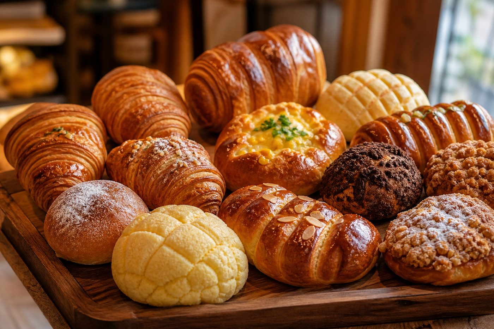
한국에는 파리바게뜨·뚜레쥬르 같은 베이커리 체인과, SNS에서 유명한 낭만 샌드·버터빵 같은 인기 메뉴가 많습니다. 식사 대용 빵부터 디저트 빵·수제 베이커리까지 종류가 다양합니다.
정일품전병 대
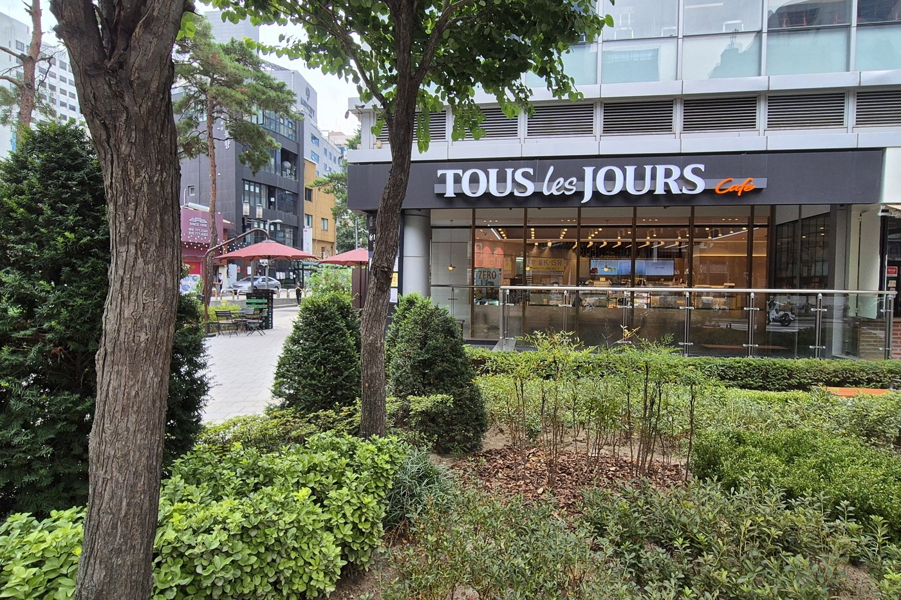
식빵·페스츄리·케이크 등

한정)생망고 & 생크림 굴뚝빵
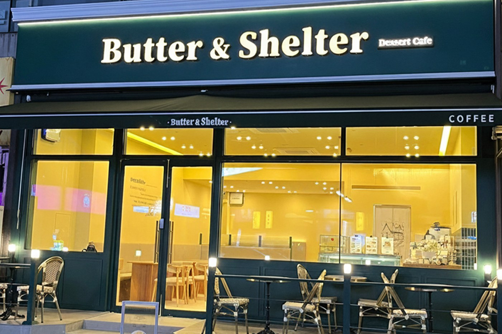
두바이샌드
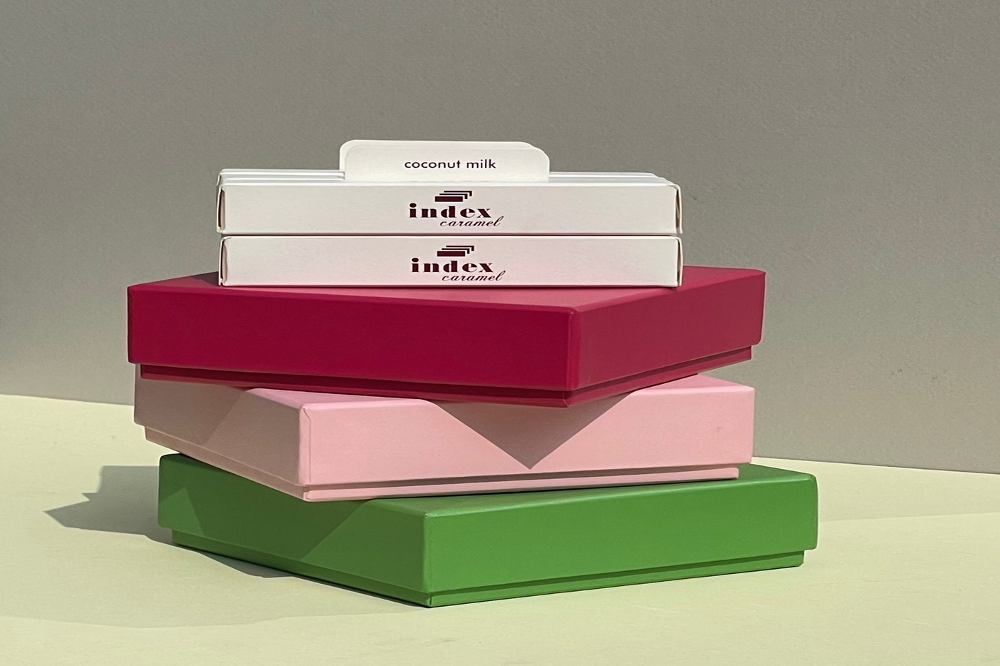
오리지널 세트 ORIGINAL SET
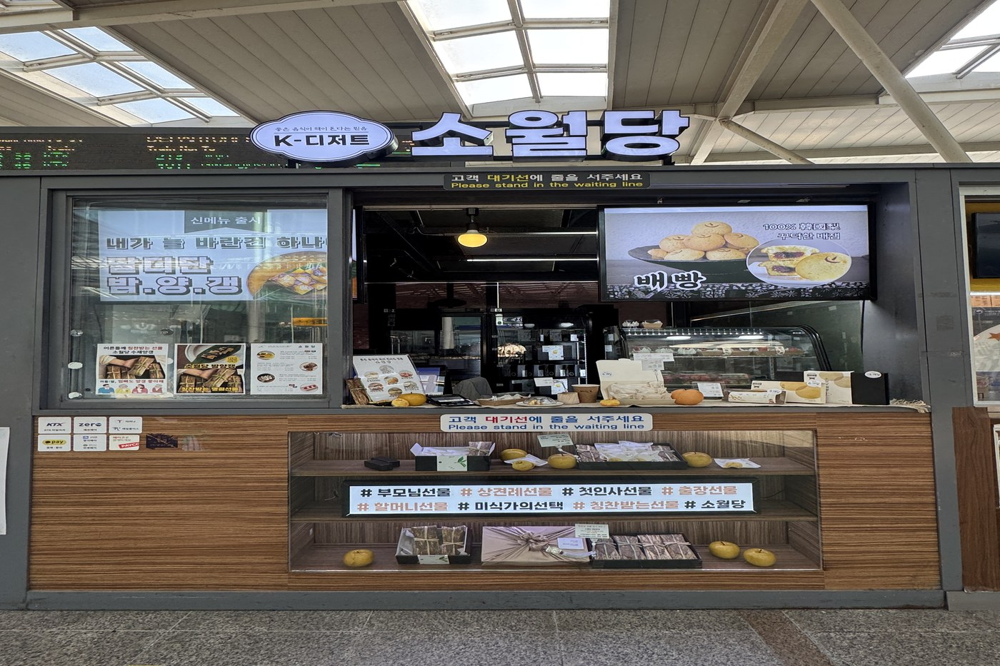
배빵 6개입(간편형 세트)
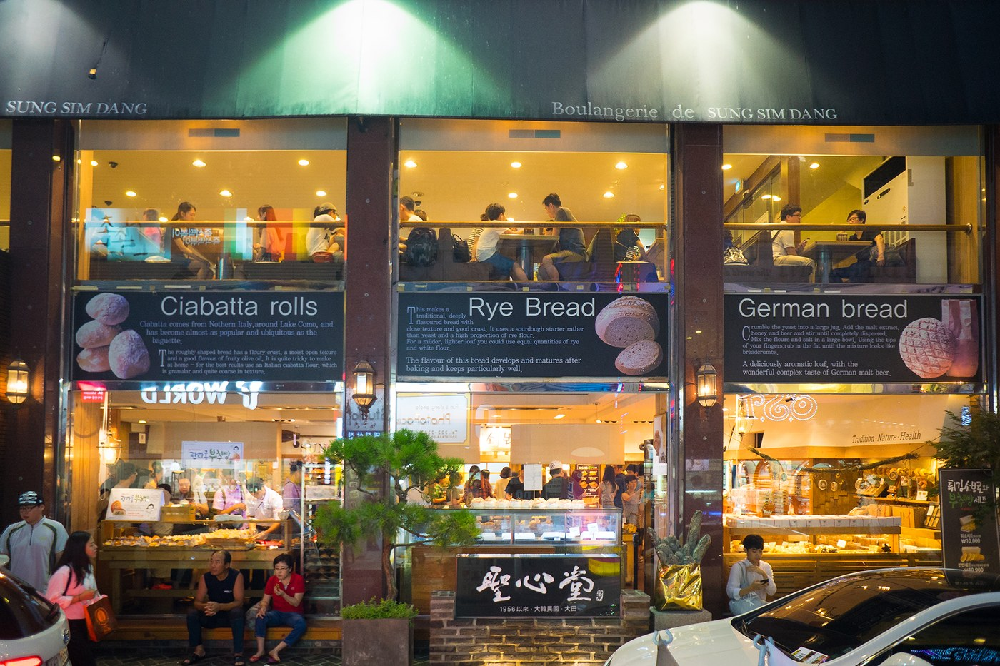
전설의 팥빙수
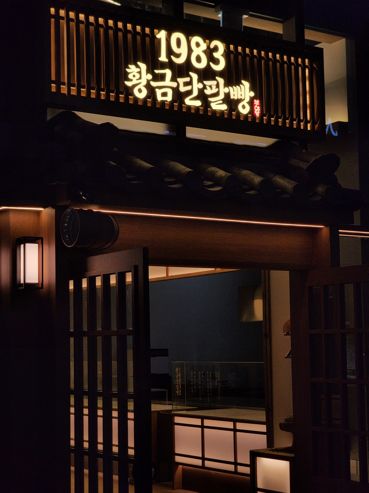
황금 단팥빵 8개입
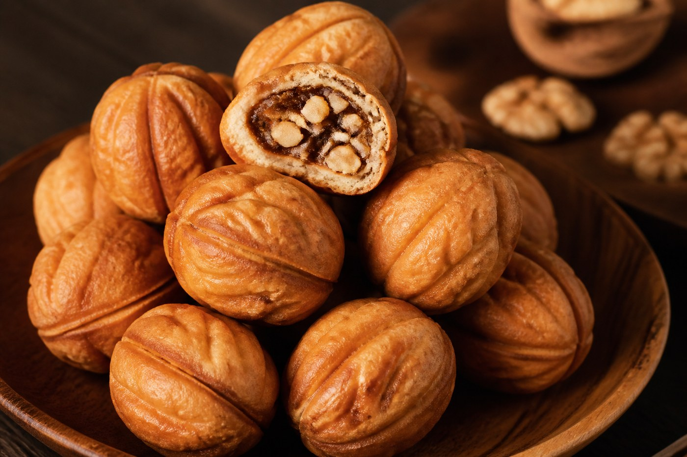
답례품8알 예약주문받습니다(라벨무료)
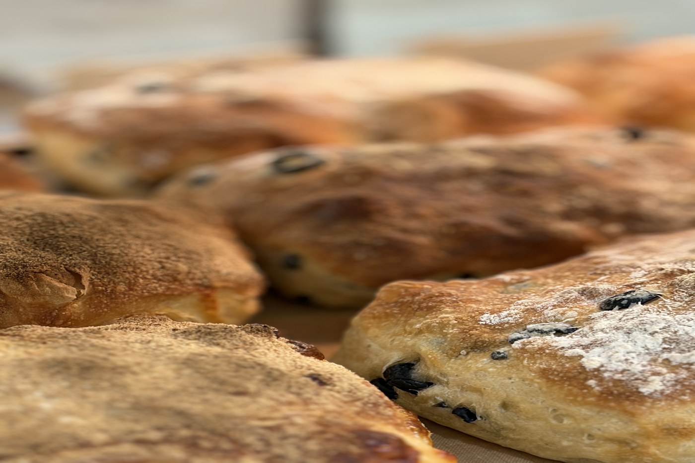
밤식빵
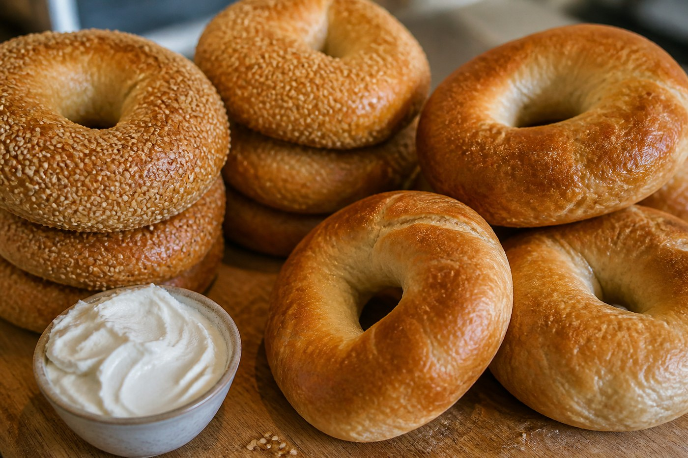
플레인 베이글
버터스카치 커피
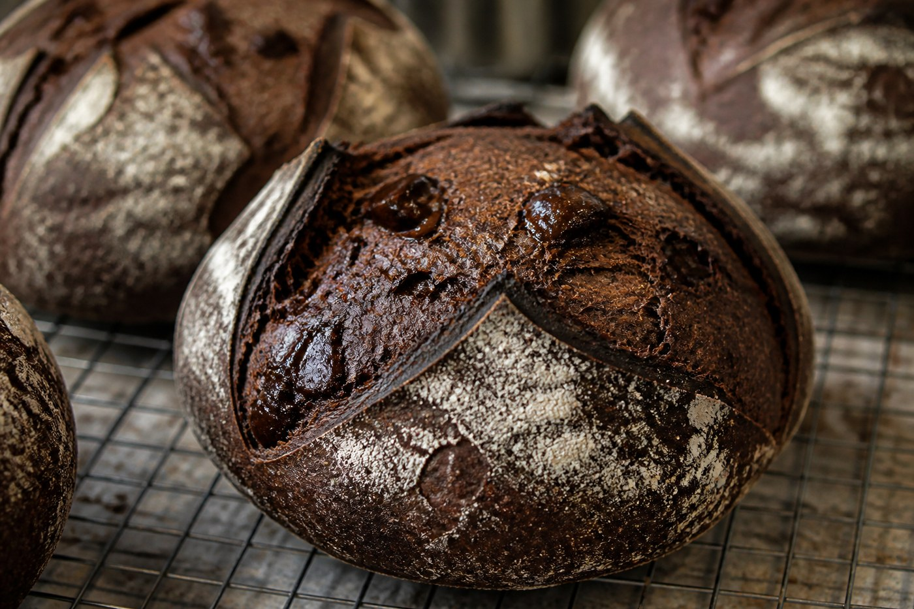
라자냐
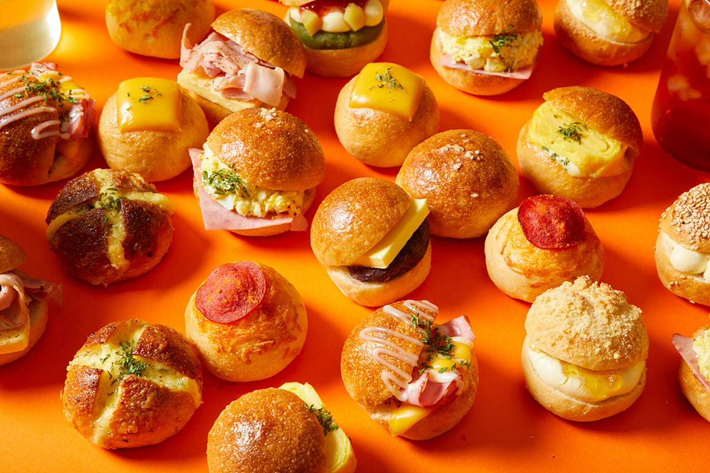
소프트 아이스크림